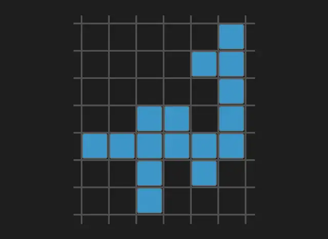
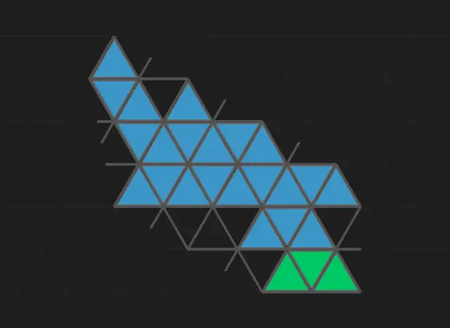
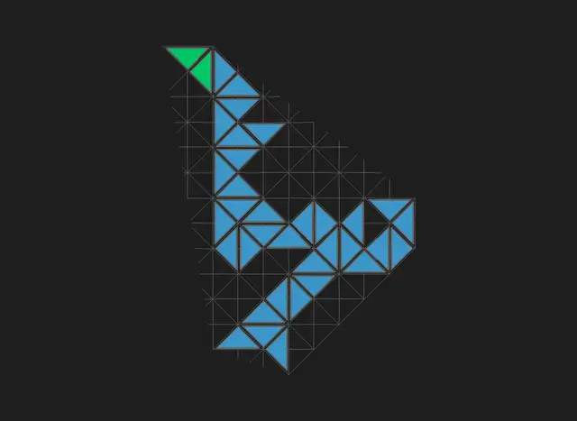
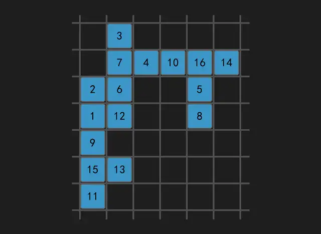
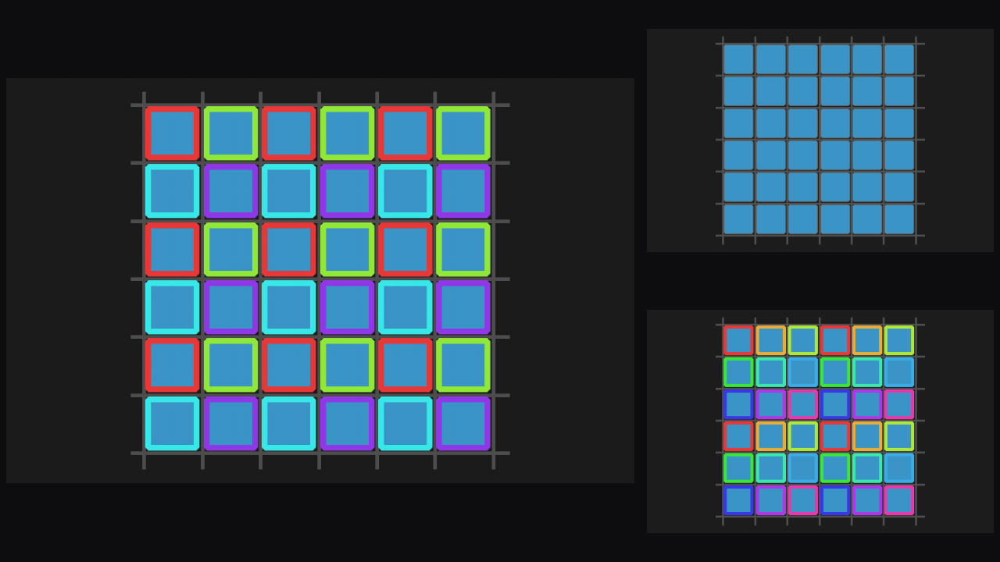
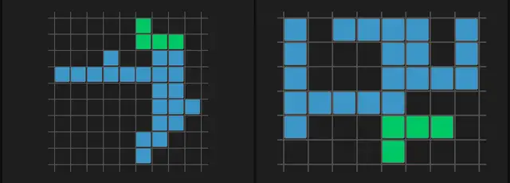

貓九的滑塊遊戲GATENNEASLIDER
規則 30 秒就能記住。
但是 30 分鐘可能都玩不會。
永久免費・程式碼開源・沒有廣告・不用安裝 —— 瀏覽器裡點開就能玩
網頁版是 試玩：能打亂還原、能計時、能存檔。求解器、異形謎題、新手教程、宏定義這些完整功能，在完整版裡。
怎麼玩：只有三個動作

- 1選一條縫：相當於劃一刀，把滑塊組切成幾個部分。
- 2點某一個滑塊：與那塊連通的一整片整組被選中。
- 3完成滑動：選中的部分一起滑動特定距離（由「等級」決定），如果任何時候斷開或重疊，就不能往這個方向滑動。

還原條件：讓所有方塊構成一整塊完整的實心長方形 —— 沒有缺口、沒有空洞。位置在哪裡不重要、轉 90 度也算（不是要你回到初始版面）。預設尺寸都是正方形，所以最常碰到的目標就是拼回一個正方形；自訂 7×9 這類不等邊的盤時，目標就是 7×9 的實心長方形。
網站背景那張動圖就是一次完整還原：7×7、等級 2、70 步，從打亂一路走回實心正方形。想看詳細規則、術語、各種模式和快捷鍵，到玩法詳解。
為什麼值得一玩
四種謎題形態（僅完整版）
矩形、三角、米字、數字 —— 同一套規則，思路通用但解法有差異，各有各的難點。建議先學會矩形謎題。
註：網頁版只有矩形謎題。
各種尺寸與等級
8×8 太難？先試試 6×6！想要 4 級的 7×9 謎題？直接點「自訂」！等級決定移動的距離單位 —— 每次只能平移等級的整數倍格數。等級越高，限制越多，需要更強的規劃能力。
數不盡的變化
每一局都是隨機打亂的。同一個尺寸同一個等級，也可以玩幾千幾萬次不重樣，不存在標準的解法。
新手教程（僅完整版）
不看任何說明也能上手：內建引導關卡，從最簡單的局面開始，一步步教你怎麼看縫、怎麼帶動方塊。
註：網頁版無新手教程。
五種操作方式
鍵鼠、單次拖動、兩次拖動、箭頭按鍵、虛擬鍵盤 —— 桌面和手機都順手，各自有開關能自由組合。
內建求解器（僅完整版）
讓程式幫你解，看看它的思路對你有什麼啟發：點擊「設定 - 求解器」選擇演算法，保存後點「編輯 - 求解」等程式運算。
註：網頁版無求解器。
視覺增強
著色器與連鎖器：哪些事辦得到、哪些辦不到，看一眼就知道。兩個版本都有，詳細說明與截圖在下面「兩個視覺輔助」那一節。
宏功能
像魔術方塊公式一樣：錄製一串操作、命名保存，之後一鍵播放或逆序播放。卡關時琢磨出的套路可以存下來反覆用。
懸浮面板
虛擬鍵盤（F1）、調試面板（F2）、成績面板（F3）都是可拖動的浮動小窗，位置和開關狀態它自己會記住，隨時開關。
涉及高深數學
這套規則背後連著群論、置換、晶格自同構這些東西。有興趣可以看相關數學問題。
可競速
成績面板記錄步數與時間，有單次、五次平均、十二次平均等，和魔術方塊速擰一樣的統計口徑，適合自己刷記錄。
開源・永久免費
程式碼公開在 GitHub（AGPL-3.0），下載原始碼後可自由修改。永遠免費，沒有廣告，也不會有一天突然收費。
四種形態：規則相同，腦子完全不同





尺寸與等級：換個等級，就是另一個難度
每一局的難度由 尺寸 + 等級 決定。尺寸指的是還原狀態的長與寬；等級是移動的距離單位 —— 每次只能平移等級的整數倍格數。
1 級最自由，相鄰且同向就能互換；2 級每次至少走兩格，方塊被規則劃分到 4 種隱形的分組；3 級則是 9 種分組。打開著色器看得最清楚：顏色數剛好是等級²。


等級越高，走法越受限制：看起來能走、實際上走不過去的地方越來越多，步步為營。
兩個視覺輔助：哪些辦得到，看一眼就知道
這遊戲卡人的地方往往不是「想不到怎麼走」，而是「以為能走、其實一步都挪不動」。兩個開關專門治這個：
- 著色器：按方塊所屬的分組描邊上色。同色的方塊永遠可以互換，不同色的不管怎麼挪都換不過去。顏色數剛好是等級² —— 等級越高，分得越細。
- 連鎖器：把游標停在某個空位上，全場所有能補進這個空位的位置會一起提亮。想填某個洞卻怎麼都塞不進去時，開它就清楚了。
兩個開關在完整版和網頁版裡都有，隨時可開可關；不喜歡花花綠綠就關掉。
如果你玩過魔術方塊，這樣理解最快
作者是速擰玩家，整套設計都在向魔術方塊看齊：一次滑動就相當於一次轉動，打亂、還原、DNF、Ao5、Ao12這些說法也是直接沿用速擰的習慣。
| 魔術方塊 | 貓九的滑塊遊戲 |
|---|---|
| 正階魔方（二階、三階、四階……） | 正方形謎題（4×4、6×6、8×8……） |
| 不等階魔方（2×3×4、3×4×5……） | 不等邊矩形謎題（5×8、7×9……） |
| 異形魔方（金字塔、斜轉、五魔方……） | 三角、米字、數字形態 |
| 轉動一層 | 沿一條縫推動一整片 |
| 打亂 → 復原 | 打亂 → 還原 |
| 上帝之數 20（三階已被證明） | 未知 —— 連作者寫的求解器都有解不開的局面 |
但底層完全不同：魔術方塊的轉動永遠可逆、狀態總數是個已知的大數；這裡的滑動被「不能斷開、不能重疊」兩條鐵律卡死，常常看起來能走、其實一步都挪不動 —— 難也就難在這裡。
五種操作方式：怎麼順手怎麼來
鍵鼠控制
經典操作：方向鍵 / WASD 移動，配合點縫、點塊；競速時最方便的方式。
單次拖動
按住滑塊直接拖，一步到位，非常方便，適合電腦單手操作，也適合手機、平板。
兩次拖動
先點縫隙、再按住方塊拖動 —— 不容易誤觸。
箭頭按鍵
選中之後，畫面上會浮出方向按鍵，點一下走一步，手指不用對準格子。
虛擬鍵盤
F1 叫出的浮動小鍵盤，適合習慣鍵鼠控制、手邊沒有鍵盤時臨時用。
五種方式都有獨立開關，可以隨意組合，也可以只留一種。
網頁版 vs 完整版：到底差在哪裡
網頁版不是「功能被閹割的半成品」，而是同一套玩法的完整試玩 —— 核心操作、打亂還原、計時統計、視覺輔助一個不少，存檔和成績都存在你自己瀏覽器裡。缺的是形態、求解器、教程、宏這些深度功能，它們在同樣免費的完整版裡。
| 功能 | 網頁版（免費試玩） | 完整版 Windows / Python（同樣免費） |
|---|---|---|
| 矩形謎題・打亂與還原 | 有 | 有 |
| 尺寸與等級自訂（含 7×9 這類不等邊） | 有 | 有（限制相同：等級 < 最長邊） |
| 三角 / 米字 / 數字形態 | 無 | 有 |
| 練習模式 / 競速模式・計時・計步 | 有 | 有 |
| 成績統計（最佳成績・Ao5・Ao12・DNF） | 有 | 有 |
| 著色器 / 連鎖器視覺輔助 | 有 | 有 |
| 三種控制模式（鍵鼠・單次拖動・兩次拖動） | 有 | 有 |
| 虛擬鍵盤（F1）・成績面板（F3） | 有 | 有 |
| 箭頭按鍵・調試面板（F2）・快捷鍵自訂 | 無 | 有 |
| 內建求解器（多種演算法・自動求解） | 無 | 有 |
| 新手教程 | 無 | 有 |
| 宏定義（錄製・命名・播放・逆序播放） | 無 | 有 |
| 存檔 | 瀏覽器本機（多槽位） | 本機檔案，可備份 |
| 離線使用 | 可把整站打包帶走 | 中（本身就是離線程式） |
| 安裝 | 不用裝，開瀏覽器就玩 | 免安裝，解壓後雙擊即用 |
一句話建議：先在瀏覽器裡玩兩局試試手感，覺得有意思再去下載完整版 —— 兩個版本都免費、都開源，不存在「付錢才能玩到」的部分。
下載
線上試玩（網頁版）
不用下載、不用安裝、不用註冊，點開就能玩。先用這個確定你想不想玩。
功能較精簡：以矩形形態和基礎計時、存檔為主。
Windows 完整版
四種形態 + 內建求解器 + 新手教程 + 視覺增強 + 競速統計 + 存檔匯出 —— 想認真玩就下載這個。
解壓後雙擊 GatenneaSlider.exe 即可，不需要安裝 Python。首次啟動約 5 秒（殺毒軟體在掃），之後約 2 秒。
⬇ 下載 ZIP（約 31 MB）完整版長這樣
以上截圖來自完整版（Windows / Python），實際介面可能隨版本略有不同。
其他選擇：Python 原始碼（裝好 pygame 直接跑）・離線網頁版（整站打包，斷網也能玩）・查表求解器資料庫（可選；沒裝只會讓「查表求解器」不可用，其它功能不受影響）。
版本號長得像 v197-20261006：197 是 Git 提交數，20261006 是打包日期，一眼就能比出新舊。上面的下載連結固定指向最新版，不用到處找。
程式沒有數位簽章，某些防毒軟體可能跳出攔截提示，選「仍要執行」即可。Release 頁面附了 SHA256 校驗值，下載後可用 certutil -hashfile 檔名.zip SHA256 核對。
成績排行榜開發中
目前成績只保存在你自己的電腦或瀏覽器裡。貓九正在架設後端，做完之後你可以在網站上提交成績，跟其他人比誰解得更快、誰的 Ao5 更低。
在那之前，先在完整版裡自己刷記錄吧 —— 計時口徑跟魔方速擰是一套（DNF / Ao5 / Ao12）。有想法或建議也歡迎告訴貓九。
動態與計畫
緣起：2025 年，貓九用正方體磁鐵（巴克球）在實體桌面上演示了這個構思 —— [貓九]我用磁鐵設計了一種高難度謎題：貓九滑塊。後來它被寫成了程式，就是你現在看到的這個遊戲。
- 已完成：四種形態（矩形 / 三角 / 米字 / 數字）、新手教程、內建求解器、著色與連鎖視覺增強、宏系統與懸浮面板、Windows 單檔發行、網站捐赠入口。
- 正在做：成績排行榜後端（成績上傳與排名）、介面動效與視覺回饋優化、更多形態的求解器強度。
- 在想：行動版體驗強化、自動更新機制、更多教程關卡。
完整的版本歷史在動態・更新日誌，裡面同時記錄網路版與 Python 版的改動。
支持貓九
這個遊戲完全免費、沒有廣告、程式碼開源。如果你玩得開心，可以在愛發電上支持一下 —— 它會變成貓九做下一關、下一個形態、下一個後端的時間。
去愛發電支持完全自願，不影響任何功能；不支持也一樣歡迎常來玩，把遊戲分享給朋友就是很大的幫助。